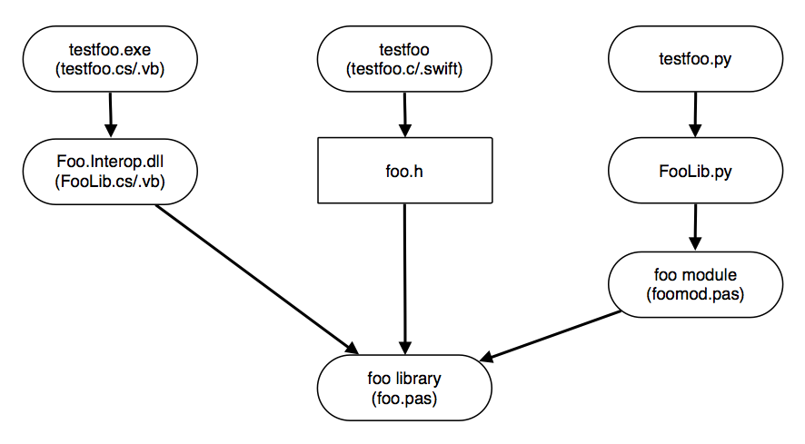

All source code and scripts mentioned in this article are available here: PascalDynLibs.zip
Here's a simple Pascal library whose tiny bit of trivial code is dwarfed by conditionals that have been added to make the library as general as possible. For now, you can mostly ignore the conditionals and just note that the library implements and exports a single function that takes one argument and returns a value derived from the argument's value.
library foo;
{$IFDEF FPC}
{$mode objfpc}{$H+}
{$ENDIF}
uses
SysUtils
{$IFDEF FPC},
ctypes
{$ENDIF};
{$IFNDEF FPC}
type
cint32 = LongInt;
{$ENDIF}
//By default, use cdecl on Windows too: if stdcall, MSVC won't link
// to 32-bit Delphi/FPC DLL unless export decorated names too (below).
{$DEFINE USE_CDECL}
{$IFDEF USE_STDCALL} //Override and use stdcall?
{$UNDEF USE_CDECL}
{$ENDIF}
function FooGetVal(InParam : cint32) : cint32; {$IFDEF USE_CDECL}cdecl{$ELSE}stdcall{$ENDIF};
begin
try
Result := InParam * 2;
except //No way to return E.Message, so just return impossible value (odd).
Result := -1;
end;
end;
exports
FooGetVal
{$IFNDEF USE_CDECL}
{$IFDEF WIN32},
FooGetVal name 'FooGetVal@4' //Also export stdcall-decorated name with Win32.
{$ENDIF}
{$ENDIF};
end.
ppc386 foo.pas
ppcx64 -olibfoo64.dylib foo.pas
lipo -create libfoo.dylib libfoo64.dylib -output libfoo.dylib
install_name_tool -id ./libfoo.dylib libfoo.dylib
rm libfoo64.dylib
file libfoo.dylib
nm -m -U libfoo.dylib
ppc386 foo.pas
ppcrossx64 -ofoo64.dll foo.pas
First we'll create an interop assembly in C# that sits between your calling code (any .NET language) and the compiled library. The interop assembly makes library function GetFooVal available as static function GetVal of class FooLib. Since the function is static, you won't have to instantiate the class to use the function.
// FooLib.cs
using System;
using System.Runtime.InteropServices;
namespace Foo.Interop
{
public class FooLib
{
#if USE_64_BIT
private const string FooLibNameBase = "foo64";
#else
private const string FooLibNameBase = "foo";
//Note 32-bit Mono on OS X needs 32-bit or "fat" libfoo.dylib
#endif
#if USE_STDCALL
private const CallingConvention FooCallConv = CallingConvention.StdCall;
#elif USE_WINAPI //uses StdCall on Windows and Cdecl on OS X and Linux
private const CallingConvention FooCallConv = CallingConvention.Winapi;
#else
private const CallingConvention FooCallConv = CallingConvention.Cdecl;
#endif
[DllImport(FooLibNameBase,
CallingConvention=FooCallConv)]
private static extern Int32 FooGetVal(Int32 InParam);
public static Int32 GetVal(Int32 InParam)
{
return FooGetVal(InParam);
}
}
}
mcs /target:library /platform:x86 /out:Foo.Interop.dll FooLib.cs
C:\Windows\Microsoft.NET\Framework\v4.0.30319\csc.exe /target:library /platform:x86 /out:Foo.Interop.dll FooLib.cs
' testfoo.vb
Option Explicit On
Option Strict On
Imports Foo.Interop
Public Class TestFoo
Public Shared Sub Main()
Console.WriteLine(FooLib.GetVal(1))
End Sub
End Class
vbnc /target:exe /reference:Foo.Interop.dll testfoo.vb
C:\Windows\Microsoft.NET\Framework\v4.0.30319\vbc.exe /target:exe /platform:x86 /reference:Foo.Interop.dll testfoo.vb
mono testfoo.exe
testfoo
Note that if your calling code is also C#, you can dispense with a separate interop assembly and simply compile its source into the test application, like this on OS X:
mcs /target:exe testfoo.cs FooLib.cs
C:\Windows\Microsoft.NET\Framework64\v4.0.30319\csc.exe /target:library /platform:x64 /out:Foo.Interop.dll /define:USE_64_BIT FooLib.cs
To use the library in a C language, you need to create a header file for it and the header file's calling convention and types must match the library's. Here's the header file for our example library:
// foo.h
#include <stdint.h>
#ifdef _MSC_VER
#define CDECL __cdecl
#define STDCALL __stdcall
#else
#define CDECL /* */
#define STDCALL __attribute__((stdcall))
#endif
#ifdef USE_STDCALL
#define FOO_CALL STDCALL
#else
#define FOO_CALL CDECL
#endif
//Note issue with 32-bit Windows DLL: if __stdcall is used,
// MSVC linker looks for stdcall-decorated "C" function names.
// http://en.wikipedia.org/wiki/Name_mangling
// https://msdn.microsoft.com/en-us/library/x7kb4e2f.aspx
// https://msdn.microsoft.com/en-us/library/deaxefa7.aspx
typedef int32_t FOO_INT;
FOO_INT FOO_CALL FooGetVal(FOO_INT InParam);
// testfoo.swift
class FooLib {
class func GetVal(InParam: Int32) -> Int32 {
return FooGetVal(InParam)
}
}
print(FooLib.GetVal(1))
xcrun swiftc -import-objc-header foo.h -L. -lfoo testfoo.swift
./testfoo
// testfoo.c
#include "foo.h"
#include <stdio.h>
int main()
{
printf("%d\n", FooGetVal(1));
}
clang -L. -lfoo -m32 -otestfoo testfoo.c
clang -L. -lfoo -m64 -otestfoo64 testfoo.c
lipo -create testfoo testfoo64 -output testfoo
rm testfoo64
./testfoo
arch -32 ./testfoo
arch -64 ./testfoo
echo off
setlocal
set PATH=C:\Tools\MinGW\bin;%PATH%
C:\Tools\MinGW\bin\gcc -L. -lfoo -otestfoo.exe testfoo.c
echo off
setlocal
C:\Tools\LLVM\bin\clang -c -IC:\Tools\MinGW\include testfoo.c
set PATH=C:\Tools\MinGW\bin;%PATH%
C:\Tools\MinGW\bin\gcc -L. -lfoo -otestfoo.exe testfoo.o
EXPORTS
FooGetVal
setlocal
set vcpath="C:\Program Files (x86)\Microsoft Visual Studio 12.0\VC"
%vcpath%\bin\lib /DEF:foo.def /MACHINE:X86 /OUT:foo.lib
%vcpath%\bin\lib /DEF:foo64.def /MACHINE:X64 /OUT:foo64.lib
echo off
setlocal
set vcpath="C:\Program Files (x86)\Microsoft Visual Studio 12.0\VC"
call %vcpath%\bin\vcvars32.bat
%vcpath%\bin\cl.exe testfoo.c foo.lib
call %vcpath%\bin\amd64\vcvars64.bat
%vcpath%\bin\amd64\cl.exe /Fetestfoo64.exe testfoo.c foo64.lib
// testfoo.cpp
extern "C" {
#include "foo.h"
}
#include <stdio.h>
int main()
{
printf("%d\n", FooGetVal(1));
}
With a 32-bit library, Visual C expects the library's function names to be "decorated". See the links in the foo.h header file above for more information. But basically it means that you'll need to export the library functions using decorated names. For our example, that means the following:
Note that determining the decorated function name can be a bit tricky. You have to add up the sizes of all arguments and use that after the "@" in the function name. With the FooGetVal function, there's only one 4-byte argument.
EXPORTS
FooGetVal
FooGetVal@4
library foomod;
{$IFDEF FPC}
{$mode objfpc}{$H+}
{$ENDIF}
uses
SysUtils,
{$IFDEF FPC}
ctypes,
{$ENDIF}
PyAPI;
{$DEFINE UNIV_OR_32BIT}
{$IFNDEF DARWIN} {Assume OS X library is universal 32/64-bit}
{$IFDEF CPUX64}
{$UNDEF UNIV_OR_32BIT}
{$ENDIF}
{$IFDEF CPU64}
{$UNDEF UNIV_OR_32BIT}
{$ENDIF}
{$ENDIF}
const
{$IFDEF UNIV_OR_32BIT}
FooLibNameBase = 'foo';
{$IFDEF USE_PYTHON3}
FooModName = 'foomod_3';
{$ELSE}
FooModName = 'foomod';
{$ENDIF}
{$ELSE}
FooLibNameBase = 'foo64';
{$IFDEF USE_PYTHON3}
FooModName = 'foomod64_3';
{$ELSE}
FooModName = 'foomod64';
{$ENDIF}
{$ENDIF}
{$IFDEF DARWIN}
{$linklib foo}
{$ENDIF}
{$IFNDEF FPC}
type
cint32 = LongInt;
{$ENDIF}
//By default, use cdecl on Windows too: if stdcall, MSVC won't link
// to 32-bit Delphi/FPC DLL unless it exports decorated names too.
{$DEFINE USE_CDECL}
{$IFDEF USE_STDCALL} //Override and use stdcall?
{$UNDEF USE_CDECL}
{$ENDIF}
function FooGetVal(InParam : cint32) : cint32; {$IFDEF USE_CDECL}cdecl{$ELSE}stdcall{$ENDIF}; external FooLibNameBase;
function GetVal(Self : PyObject;
Args : PyObject) : PyObject; cdecl;
var
InParam : cint32;
begin
try
if PyArg_ParseTuple(Args, 'i', @InParam) = 0 then
begin //Python exception will also be set, eg, OverflowError
Result := nil;
Exit;
end;
Result := PyInt_FromLong(FooGetVal(InParam));
except
on E:Exception do
begin
PyErr_SetString(PyErr_NewException(FooModName + '.Error', nil, nil),
PAnsiChar(AnsiString(E.Message)));
Result := nil;
end;
end;
end;
const
NumFuncs = 1;
var
Methods : packed array [0..NumFuncs] of PyMethodDef;
{$IFDEF USE_PYTHON3}
ModuleDef : PyModuleDef;
{$IFDEF UNIV_OR_32BIT}
procedure PyInit_foomod_3; cdecl;
{$ELSE}
procedure PyInit_foomod64_3; cdecl;
{$ENDIF}
{$ELSE}
{$IFDEF UNIV_OR_32BIT}
procedure initfoomod; cdecl;
{$ELSE}
procedure initfoomod64; cdecl;
{$ENDIF}
{$ENDIF}
begin
Methods[0].name := 'GetVal';
Methods[0].meth := @GetVal;
Methods[0].flags := METH_VARARGS;
Methods[0].doc := '';
Methods[NumFuncs].name := nil;
Methods[NumFuncs].meth := nil;
Methods[NumFuncs].flags := 0;
Methods[NumFuncs].doc := nil;
{$IFDEF USE_PYTHON3}
ModuleDef.m_name := FooModName;
ModuleDef.m_doc := nil;
ModuleDef.m_size := 0; //?
ModuleDef.m_methods := @Methods;
ModuleDef.m_reload := nil;
ModuleDef.m_traverse := nil;
ModuleDef.m_clear := nil;
ModuleDef.m_free := nil;
PyModule_Create(ModuleDef);
{$ELSE}
Py_InitModule(FooModName, Methods[0]);
{$ENDIF}
end;
exports
{$IFDEF USE_PYTHON3}
{$IFDEF UNIV_OR_32BIT}
PyInit_foomod_3;
{$ELSE}
PyInit_foomod64_3;
{$ENDIF}
{$ELSE}
{$IFDEF UNIV_OR_32BIT}
initfoomod;
{$ELSE}
initfoomod64;
{$ENDIF}
{$ENDIF}
end.
On OS X, we can compile foomod.pas to a universal foomod.so module for Python 2.7 that can call both the 32- and 64-bit libraries. Note the use of the .so extension for compiled modules on OS X (and Linux).
ppc386 -k-framework -kPython -ofoomod.so foomod.pas
ppcx64 -k-framework -kPython -ofoomod64.so foomod.pas
lipo -create foomod.so foomod64.so -output foomod.so
install_name_tool -id ./foomod.so foomod.so
rm foomod64.so
ppc386 -dUSE_PYTHON3 -k/Library/Frameworks/Python.framework/Versions/3.5/Python -ofoomod_3.so foomod.pas
ppcx64 -dUSE_PYTHON3 -k/Library/Frameworks/Python.framework/Versions/3.5/Python -ofoomod64_3.so foomod.pas
lipo -create foomod_3.so foomod64_3.so -output foomod_3.so
install_name_tool -id ./foomod_3.so foomod_3.so
rm foomod64_3.so
ppc386 -ofoomod.pyd foomod.pas
ppcrossx64 -ofoomod64.pyd foomod.pas
ppc386 -dUSE_PYTHON3 -ofoomod_3.pyd foomod.pas
ppcrossx64 -dUSE_PYTHON3 -ofoomod64_3.pyd foomod.pas
# FooLib.py
import sys, platform
if sys.version < "3": #Python 2.x
if ((sys.platform == "win32") or (sys.platform == "linux2")) and \
(platform.architecture()[0] == "64bit"):
import foomod64 as foomod #64-bit Python, so use 64-bit module and lib
else:
import foomod
else: #Python 3.x
if ((sys.platform == "win32") or (sys.platform == "linux")) and \
(platform.architecture()[0] == "64bit"):
import foomod64_3 as foomod #64-bit Python, so use 64-bit module and lib
else:
import foomod_3 as foomod
class FooLib(object):
def __init__(self):
pass #Substitute any code here to initialize object
def __del__(self):
pass #Substitute any code here to uninitialize object
def GetVal(self, InParam):
return foomod.GetVal(InParam)
# testfoo.py
import sys
if (sys.platform == "cli"): #IronPython?
import clr
clr.AddReference("Foo.Interop")
import Foo.Interop as FooLib
# Note: If Mono's IronPython does not include standard modules (os, etc.), point
# to CPython's with IRONPYTHONPATH environment variable or sys.path.append.
else: #CPython
import FooLib
try:
print(FooLib.FooLib().GetVal(1))
except:
print(sys.exc_info()[0]) #exception name in form module.classname
print(sys.exc_info()[1]) #exception error message
python testfoo.py
python3 testfoo.py
arch -32 python testfoo.py
arch -32 python3 testfoo.py
C:\Tools\Python27_32\python.exe testfoo.py
export IRONPYTHONPATH=/System/Library/Frameworks/Python.framework/Versions/2.7/lib/python2.7/
ipy testfoo.py
C:\Tools\IronPython-2.7.5\ipy.exe testfoo.py

Mono includes C#, F#, VB.NET and IronPython.
MinGW (GCC) for Windows is available here:
Microsoft's Visual Studio Community 2015 edition is free with no restrictions on use by individuals:
Mono includes IronPython. It's also available for Windows .NET:
| IDE | Platforms | Languages | Available from |
|---|---|---|---|
| Xamarin Studio | OS X and Windows | C#, F#, VB.NET | www.monodevelop.com/download |
| Xcode | OS X | Swift, C, C++, Objective C | Apple App Store or developer.apple.com/resources |
| Visual Studio Community 2015 | Windows | C#, F#, VB.NET, C, C++, Python | www.visualstudio.com |
| PyCharm Community Edition | OS X, Windows, Linux | Python | www.jetbrains.com/pycharm |
macpgmr (at) icloud (dot) com
First posted Feb. 9, 2015; last edited Feb. 14, 2016.
Code syntax highlighting done with highlight.js.